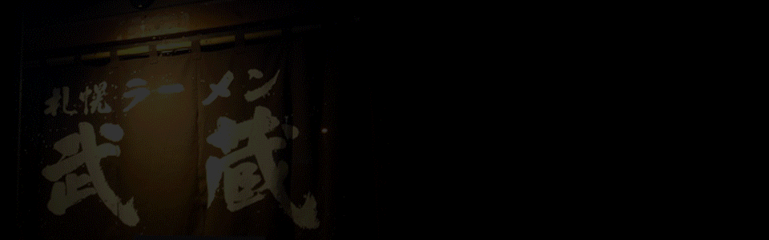
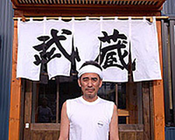
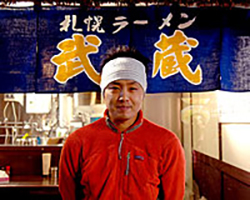
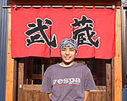
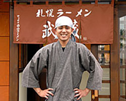
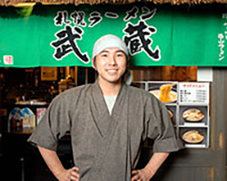

代表取締役 和島 實
1990年開店以来、「本当に旨いサッポロラーメンを食べて頂きたい」という信念で味を追求して参りました。 店舗移転やすすきの店、藻岩別邸オープンなど、常に前進あるのみという想いで日々努力しております。 これからも、全国のみなさまに札幌ラーメンの美味しさをお届けいたします。

長男 二代目（ボス） 和島 孝則
父・和島實から一番最初に暖簾を受け継いだ二代目として、本店はもちろん札幌各店、全国の物産展など様々な場所でラーメンをご提供しております。 父から受け継いだ味を次代へと引き継ぎ、より多くのお客様へ本物の味わいをお届けするべく、修行を重ねて参ります

次男 和島 啓太
現在、各地で開催される物産展を中心に回っております。 日本中の皆様に札幌ラーメンの美味しさをお伝えできるよう、全力でお作りいたします。 どこかの街でお会いできることを楽しみにしております。

三男 和島 大輔太
父や兄達の努力に負けないよう、日々修行を重ねて参りますので、 よろしくお願いいたします。

玉置 将太
本店で修行させていただくことになりました。 一杯一杯丁寧にお作りいたしますので、どうぞよろしくお願いいたし。